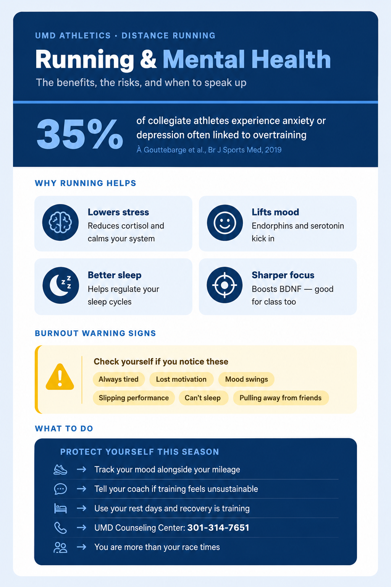

Two infographics built from the same body of sports-science research, aimed at two different readers: coaching staff, and athletes themselves.
These two infographics grew out of the same research base I used for my literature review on running and mental health, but I built them for a completely different purpose: getting that research in front of people who don't have time to read a review article. The first is aimed at coaching staff — it frames overtraining syndrome as a training-load spectrum, lists behavioral warning signs by category, and lays out a concrete response protocol a coach could actually follow. The second is aimed at athletes directly, and leads with the benefits of running before addressing burnout warning signs and self-advocacy steps, since that's the order a runner needs to hear it in.
Designing both versions forced me to think rhetorically about the same evidence in two directions. Coaches needed protocol-level language — what to do, in what order, with what threshold for referral — because they're responsible for a whole roster and need something they can act on in the moment. Athletes needed something closer to permission: warning signs framed as things to "check yourself" for, plus a reminder that recovery is part of training rather than a failure of it. Deciding what to cut, what to visualize as data versus as icons, and how blunt to be about mental health symptoms in each version was its own kind of argument-building, separate from the writing itself.
Together, these artifacts show that I can translate research into a form that a non-academic reader will actually use — a skill that sits alongside academic writing rather than replacing it, and one I expect to keep using in any field where the people who need evidence most don't have time to read a study.
